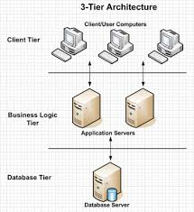

Multi-tier architecture is a client-server architecture in which the user interface, the business logic, and the data management are separated into distinct layers.
In a multi-tier architecture, the presentation layer (user interface) is responsible for displaying information to the user and collecting user input. The business logic layer processes the data and implements the application's functionality. The data management layer is responsible for storing and retrieving data from a database.
This separation of concerns allows for better scalability, maintainability, and flexibility in application development.